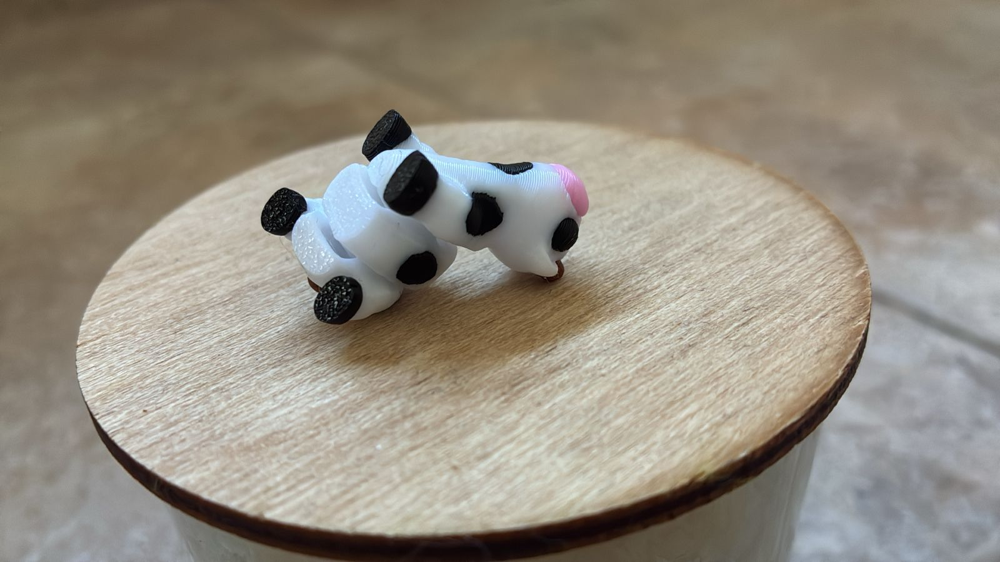

Grupo 3
Mas alla del contenido juridico, energetico y economico, que se abordo en este trabajo, la realizacion de esta exposicion, nos dejo una experiencia humana y academica muy valiosa, dado que muchos no nos conociamos previamente, y aun asi se genero una excelente interaccion, bajo un manto de compañerismo y un espiritu de cooperacion.
El trabajo no fue solamente cumplir con una consigna academica: tambien fue compartir ideas, organizarnos, escucharnos, aportar desde distintos lugares y, sobre todo, disfrutar el proceso. En ese camino se reflejo una frase atribuida a Truman que resume muy bien lo que vivimos como grupo:
“Es increible lo que se puede lograr cuando no importa quien se lleva el credito”.
Ese fue, en definitiva, el espiritu que mantuvimos durante todo el proyecto: trabajar en conjunto, sumar cada uno desde su lugar y entender que el resultado final vale mas cuando se construye entre todos.

Un pequeño guiño al chiste con el que empezo esta aventura grupal: nuestra “vaca muerta”.
Gracias por acompañarnos. Grupo 3 · YPF 360
Volver al inicio
Ir al cierre conceptual